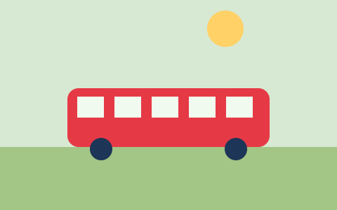

Un bus électrique sur la ligne 3
Depuis lundi, un bus électrique circule à titre d'essai sur la ligne 3. Plus silencieux, il dispose de deux emplacements pour poussettes.

L'essai dure jusqu'à fin mars. Vos impressions nous intéressent : écrivez-nous.
Numéros d'urgence
- Pompiers 118
- Police 117
- Ambulance 144
Personne de contact
Claire Exemple, secrétariat
Téléphone 027 000 78 60
Accessibilité
Nous améliorons constamment l'accessibilité de ce site. Vos remarques sont les bienvenues à l'adresse web@transports-publics-de-valfictif.example.